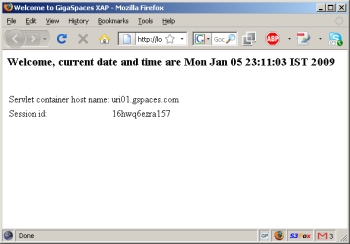
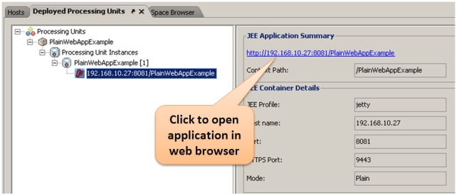
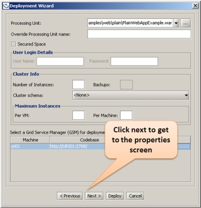
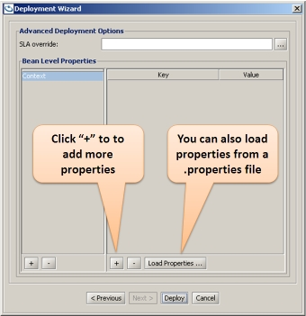
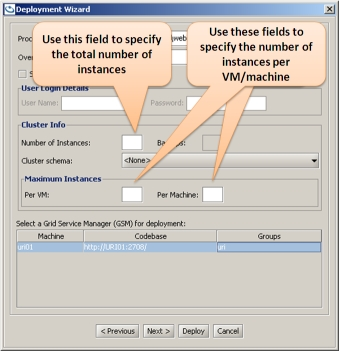
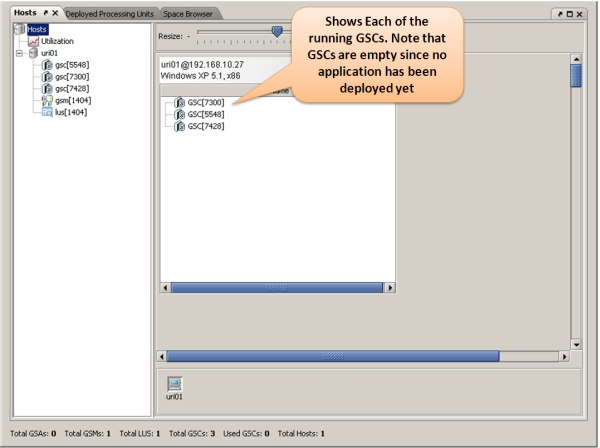
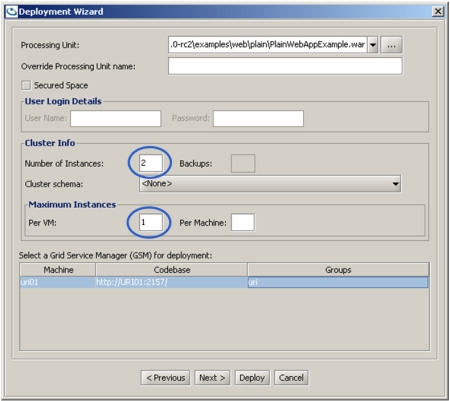
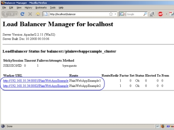

Step 1 - Deploying Your Web Application to the GigaSpaces Environment
Step summary: Learn how to deploy an existing stadard web application into the GigaSpaces environment, benefitting from the platform's self healing and dynamic load blanacing capabilities
Example Application Overview
The example application is a completely standard JEE web application. All steps in this tutorial can be applied to any standard JEE web application, but we'll use this one for the sake of simplicity.
The application is composed of a very simple JSP page, which greets the user and prints the time, the hostname of the container that served the request and some additional details.
Click here for a code snippet and a screenshot of the sample application...
Here's a snippet of the hello.jsp page which is the welcome page for the application:
Here's the code snippet from {{SessionContents.jsp}} that displays the session attributes:
{code:html}
<%@page import="java.util.*"%>
<html>
<head>
<meta http-equiv="Content-Type" content="text/html"/>
<title>Welcome to GigaSpaces XAP</title>
</head>
<body>
<h3>Welcome, current date and time are <%= new Date() %></h3>
<% String hostName = request.getServerName();
String sessionId = session.getId();
%>
<br/>
<table>
<tr>
<td>Servlet container host name:</td>
<td><%= hostName %></td>
</tr>
<tr>
<td>Session id:</td>
<td><%= sessionId %></td>
</tr>
</table>
</form>
</body>
</html>
When openning this page in a web browser, it looks as follows:

Building the Example
 Steps to build the application:
Steps to build the application:
The first thing you need to do if you haven't already done so, is Download GigaSpaces and set up your development environment.
Next, you should open a shell / command prompt window in the example directory, and type the following:
build.(sh/bat) dist
You should see an output similar to the following:
C:\GS-Releases\gigaspaces-xap-premium-8.0.0-ga\examples\web\plain>build dist
Buildfile: build.xml
build:
[mkdir] Created dir: C:\GS-Releases\gigaspaces-xap-premium-8.0.0-ga\examples\web\plain\WebContent\WEB-INF\classes
dist:
[jar] Building jar: C:\GS-Releases\gigaspaces-xap-premium-8.0.0-ga\examples\web\plain\PlainWebAppExample.war
BUILD SUCCESSFUL
Total time: 1 second
At the end of the process, the web application's war file will be created in the example's directory.
Deploying the Application
In order to deploy the application onto the GigaSpaces infrastructure (Service Grid), you will need to start the GigaSpaces runtime components - one GSM and at least one GSC. These can be started easily by starting a GigaSpaces agent on your local machine. The agent automatically manages the GigaSpaces processes for you, and will start one GSM and two GSCs by default. This is done by calling <gs root>/bin/gs-agent.(sh/bat). Alternatively, you can manually start the GSM by calling the <gs root>/bin/gsm.(sh/bat) and the GSC by calling <gs root>/bin/gsc.(sh/bat) (<gs root stands for the GigaSpaces installation directory).
The deploy command can be issued in three ways:
- By using the GigaSpaces GUI. You should call the (<gs root>/bin/gs-ui.(sh/bat) script to start the GigaSpaces management console. Next, you should choose the "Hosts" view and verify that you see your local machine and the Grid Service Manager and the Grid Service Container under it. You can also see the running GSC in the center of the screen. Once this was verified, you should do the following to deploy the .war file:
- Click the Deploy Processing Unit Button
 to open the Deployment Wizard dialog.
to open the Deployment Wizard dialog. - Click the Select Processing Unit jar file button ..., to browse for the .war file.
- Browse to the PlainWebAppExample.war .war file, located under <gs root>/examples/web/plain, and select it.
- Click the Deploy button, to deploy and wait for the web application to be provisioned to the running Grid Service Container. Once provisioned, you will see a small jetty icon under the processing unit instance tree node in the "Deplyoed Processing Units" tab:

- Click the Deploy Processing Unit Button
- By using the GigaSpaces command line tool. You should call the following command:
<gs root>/bin/gs.(sh/bat) deploy <.war file path>. Once deployed, the web application deployment will appear in the user interface as described above. - By calling build.(sh/bat) deploy, which will build the example and deploy the web application. Once deployed, the web application deployment will appear in the user interface as described above.
Advanced: Configuring Your Web Application's Runtime Environment
When deploying the web application, you may want to control various aspect of its runtime environment, such as HTTP and HTTPS ports, context root, size of web container thread pools, size of requests buffers, etc.
By default, GigaSpaces uses the Jetty Web Container to host your web application. In a typical deployment, the Jetty web container is started when your application is deployed and provisioned to one of the running GSCs. You can define many runtime parameters of the web container using Deployment Properties. Deployment properties are essentially overrides to the web container's default values. For example, when deploying a web application to the GigaSpaces environment, the web container will bind by default to port 8080, the context root will be the .war file name (without the .war extension) and the maximum number of web container threads will be 200. Deployment properties can be specified in various ways:
- By including a pu.properties file under the META-INF/spring directory or the root of your .war file. Here's the pu.properties file included in the example application:
web.port=8080 web.sslPort=9443 web.threadPool.minThreads=15 web.threadPool.maxThreads=100
- By using the command line (when deploying using the command line). You can add deployment properties as arguments to the pudeploy command. These arguments will override the values in the pu.properties file. This can be done as follows:
<gs root>/bin/gs.(sh/bat) pudeploy -properties embed://web.port=8080;web.sslPort=9443 <.war file path> - By using the GUI (when deploying using the GUI). In the deployment wizard, click Next, and then the "+" button in the next screen. You can then specify the deploy properties you want (these will override the values in the pu.properties file):
 
Defining SLA for the Application
One of the key advantages of using GigaSpaces to deploy and manage your web application is the GigaSpaces Service Grid infrastructure. The GigaSpaces Service Grid will monitor the application running instances (in GigaSpaces these are termed Processing Units) and the containers on which they run. It has two major roles, which are together termed the application's SLA:
- Making sure that your application is running properly. The first part of it is provisioning the specified number of application instances, for example you can specify at deployment time that you want 3 instances of your web application deployed, and that you want each instance to be deployed in a separate JVM, or even a separate machine. The Service Grid (or more accurately, the GSM) will provision the instances to the running containers, assuming there are enough containers to support the requested number of instances.
If a certain machine on which your application runs, or its hosting container / JVM fail, the service grid will automatically re-provision the application to run on another container somewhere on your network. This is referred to as Self Healing. - Applying dynamic scalability to the application. You can define system-level or application-level thresholds, such as CPU utilization, memory utilization, number of requests per seconds or any other application specific indicator. When these are crossed, the service grid will instantiate and provision additional application instances, or shrink down existing ones based on the threshold definition. You can also manually increase or decrease the number of application instances through the GigaSpaces user interface.
In this step we will review the first type, i.e. we will show how we can define the number of instances for the application and how the service grid "self heals" the application when one of the instances fails.
In the previous section you learned how to deploy the .war file as is to the GigaSpaces environment.
You ended up with a single web container running on a GSC and hosting the web application.
Many real life web applications need more than one web container to serve the application clients. The GigaSpaces Service Grid was specifically designed for such requirements - it enables you to define the number of instances you want to run and makes sure that this number is always maintained (provided that there are enough running containers in your environment).
Defining the Number of Application Instances
As with other configuration elements, defining the number of instances can be done in 3 ways:
- By including an SLA element in your pu.xml file under the META-INF/spring or the root directory of your .war file, or an sla.xml in one of the above locations within your .war file. Here's the relevant snippet from the sla.xml file included in the example application:
<os-sla:sla number-of-instances="1" max-instances-per-vm="1"/>This file defines one instance for the application and the maximum allowed instances per JVM (GSC). Note that in this case the second attribute doesn't really affect anything since we only have a single instance. It will come into play when the number of instances is increased (whether manually or based on an SLA monitor). If more than one instance is started in the same JVM, the service grid will make sure that the two instances do not try to bind to the same port.
You can also define the maximum number of instances per machine, as follows:<os-sla:sla number-of-instances="1" max-instances-per-machine="1"/>
Web Container Instantiation
By default, each application instance provisioned to the GSC will have its own Jetty server. The server will share some of the Jetty resources like request buffers and thread pools, but will bind to separate ports. The service grid also allows for running the web container in a shared mode, in which case all of the deployed applications will use the same Jetty instance - By using the command line (when deploying using the command line). You can specify the total number of instances and the number of instances per JVM / machine as command line arguments. These arguments will override the values in the pu.properties file:
<gs root>/bin/gs.(sh/bat) deploy -cluster total_members=3 -max-instances-per-vm 1 -max-instances-per-machine 2 <.war file path> - By using the GUI (when deploying using the GUI). You can specify the total number of instances and the number of instances per JVM / machine in the dedicated text field in the Deployment wizard. These arguments will override the values in the pu.properties file:

Configuring Dynamic Load Balancing
| Prerequisite for this section To complete this section successfully you will need to download and install the Apache 2.2 web server in your local environment. Also make sure that you have the GigaSpaces XAP distribution installed on the same machine that Apache is installed on. |
The next step after deploying your application with multiple instances is making those instances available to your application users using a single URL. This is done by fronting the application with a Load Balancer which is responsible to route incoming requests to one of the running containers based on predefined rules, such as current load on each container and whether the requesting user was previously routed to a certain instance (this is known as Session Stickiness).
GigaSpaces XAP integrates out of the box with the popular Apache HTTP server mod_proxy_balancer module for load balancing support. mod_proxy_balancer is an apache module which enables the Apache HTTP server to act as a load balancer.
It is configured using a static configuration file which lists all the hosts to which it should balance the load. So in case you want to add or remove a web container from the configuration, you will have to do it manually by editing the configuration file.
Since the GigaSpaces environment is dynamic by nature, and assumes that containers can join and leave the network randomly, and that web application instances can be started and stopped dynamically based on SLA definitions, this type of static configuration is problematic.
The Apache Load Balancing Agent
The solution for this is the GigaSpaces Apache Load Balancing Agent. This agent is a separate process, which runs on the same machine that the Apache HTTP server runs on, and monitors the runtime state of all web applications deployed to GigaSpaces. On startup, or when the state changes (web container added / removed), it updates the relevant Apache configuration file automatically and notifies the Apache HTTP server that it needs to reload the file. That way the Apache HTTP server always stays up to date with the current runtime state.
Configuring the Apache Load Balancing Agent
To configure Apache to work with the load balancing agent you should do the following:
- Make sure Apache loads the load balancing module. This is done by adding the following statements to the Apache configuration, typically located under <Apache home>/conf/httpd.conf (usually these statements are already there, some of them might be commented out so you need to uncomment them):
LoadModule proxy_module modules/mod_proxy.so LoadModule proxy_balancer_module modules/mod_proxy_balancer.so LoadModule proxy_connect_module modules/mod_proxy_connect.so LoadModule proxy_http_module modules/mod_proxy_http.so
You should also include the following in the Apache configuration to be able to monitor the load balancer (you will learn how this is done in the next section):
ProxyPass /balancer ! # Proxy Management <Location /balancer> SetHandler balancer-manager Order Deny,Allow Deny from all Allow from all </Location> ProxyStatus On <Location /status> SetHandler server-status Order Deny,Allow Deny from all Allow from all </Location>
- Create an Apache GigaSpaces directory so that the Apache load balancing agent can use it as the location of the automatically generated load balancer configurations files it creates. This can be located anywhere on your disk, so long as the load balancer agent has permission to write to this directory and Apache to read from it. A good place would be <Apache home>/conf/gigaspaces/.
- Instruct Apache to include the configurations files generated by the load balancing agent. This is done by adding the following to the Apache configuration file (the below snippet assumes that the directory created in the previous step is located at /opt/local/apache2/conf/gigaspaces/):
Include /opt/local/apache2/conf/gigaspaces/*.conf
In the next section you will learn how to start the load balancing agent and tie all the pieces together.
Putting It All Together
Now that we've gone over all the details, let's see everything in action. In this section we will start multiple GSCs and deploy 3 application instances on them. We will then start Apache HTTP server and the Apache load balancer agent, and connect to the application from the load balancer. We will also verify that the load balancer is aware of all the running instances.
Finally, we will terminate one of the running containers and watch the failover and self-healing process in action. Note that we will not use the GigaSpaces Agent this time, simply because the following steps are better illustrared without it. Let's get started:
- Build the application as described earlier in this tutorial
- Start one GSM by calling <gs root>/bin/gsm.(sh/bat).
- Start three GSCs by calling <gs root>/bin/gsc.(sh/bat) three times
- Start the GigaSpaces user interface by calling <gs root>/bin/gs-ui.(sh/bat). When the user interface is started, you should see the three GSCs presented in it.
Click to view screenshot...
- Deploy the application using the user interface, as described earlier in this tutorial. In the "Number of Instances" text field, type 2, and in the "Maximum Instances --> Per VM" text field type 1.
Click to view screenshot...
Once deployed, you will see the two instances of the web application deployed within the UI. One GSC will remain empty, which is fine. We'll use it to demonstrate failover.
- If you haven't already done so, start the Apache HTTP server on port 80 (the default).
- Start the load balancer agent by calling the script <gs root>/tools/apache/apache-lb-agent.(sh/bat) -apache <Apache home>. Apache home is the location of the Apache installation on your disk.
Click to show expected output...Starting apache-lb-agent with line: "c:\Java\jdk1.6.0_11\bin\java" -server -XX:+AggressiveOpts -showversion -Xmx512m -Xbootclasspath/p:.;"c:\GS-Releases\gigaspaces-xap-premium-8.0.0-ga\bin\\..\lib\platform\xml\serializer.jar"; "c:\GS-Releases\gigaspaces-xap-premium-8.0.0-ga\bin\\..\lib\platform\xml\xalan.jar"; "c:\GS-Releases\gigaspaces-xap-premium-8.0.0-ga\bin\\..\lib\platform\xml\xercesImpl.jar"; "c:\GS-Releases\gigaspaces-xap-premium-8.0.0-ga\bin\\..\lib\platform\xml\xml-apis.jar" -Dlb.vmDir="c:\GS-Releases\gigaspaces-xap-premium-8.0.0-ga\bin\\../tools/apache" -Dcom.gs.jini_lus.locators= -Dcom.gs.jini_lus.groups=myGroup -Dsun.rmi.dgc.client.gcInterval=36000000 -Dsun.rmi.dgc.server.gcInterval=36000000 -Djava.rmi.server.hostname=""HOST01"" -Djava.rmi.server.RMIClassLoaderSpi=default -Djava.rmi.server.logCalls=false "-Dcom.gs.home=c:\GS-Releases\gigaspaces-xap-premium-8.0.0-ga\bin\\.." -Djava.security.policy="c:\GS-Releases\gigaspaces-xap-premium-8.0.0-ga\bin\\..\policy\policy.all" -classpath ;.;"c:\GS-Releases\gigaspaces-xap-premium-8.0.0-ga\bin\\..";.; "c:\GS-Releases\gigaspaces-xap-premium-8.0.0-ga\bin\\..\lib\required\commons-logging.jar"; "c:\GS-Releases\gigaspaces-xap-premium-8.0.0-ga\bin\\..\lib\required\gs-openspaces.jar"; "c:\GS-Releases\gigaspaces-xap-premium-8.0.0-ga\bin\\..\lib\required\gs-runtime.jar"; "c:\GS-Releases\gigaspaces-xap-premium-8.0.0-ga\bin\\..\lib\required\spring.jar";.;.; "c:\GS-Releases\gigaspaces-xap-premium-8.0.0-ga\bin\\..\lib\optional\spring\cglib-nodep-2.1_3.jar"; "c:\GS-Releases\gigaspaces-xap-premium-8.0.0-ga\bin\\..\lib\optional\spring\common-annotations.jar";.; "c:\GS-Releases\gigaspaces-xap-premium-8.0.0-ga\bin\\..\lib\platform\jdbc\h2.jar"; "c:\GS-Releases\gigaspaces-xap-premium-8.0.0-ga\bin\\..\lib\platform\jdbc\hsqldb.jar";.; "c:\GS-Releases\gigaspaces-xap-premium-8.0.0-ga\bin\\..\lib\platform\velocity\velocity-dep-1.5.jar"; org.openspaces.pu.container.jee.lb.apache.ApacheLoadBalancerAgent -apache c:\Apache2.2 java version "1.6.0_11" Java(TM) SE Runtime Environment (build 1.6.0_11-b03) Java HotSpot(TM) Server VM (build 11.0-b16, mixed mode) Log file: c:\GS-Releases\gigaspaces-xap-premium-8.0.0-ga\bin\..\logs\2009-06-09~22.15-gigaspaces-service-host01-7764.log Starting Apache Load Balancer Agent... groups [myGroup], locators [null] apachectl Location [c:\Apache2.2/bin/httpd.exe] config directory [c:\Apache2.2/conf/gigaspaces] update config interval [10000ms] Detecting existing config files... Done detecting existing config files LUS Discovered [com.sun.jini.reggie.RegistrarProxy[registrar=859346b4-08ae-43ef-8449-983b40951964 DynamicSmartStub [ImplObjClass: com.sun.jini.reggie.GigaRegistrar, ConnectionURL: NIO://HOST01:4950/pid[5756]/129385153946019_1_-3853749423915269055, MaxConnPool: 1024 ]]] Started Apache Load Balancer Agent successfully Make sure Apache is configured with [Include c:\Apache2.2\conf\gigaspaces/*.conf] [PlainWebAppExample]: Adding [0178396a-b610-4297-8f61-0539f80dcc85] [192.168.2.102:8081/PlainWebAppExample] [PlainWebAppExample]: Adding [1e95fe3d-c971-4f36-a44f-a3c09400cac5] [192.168.2.102:8082/PlainWebAppExample] [PlainWebAppExample]: Detected as dirty, updating config file... [PlainWebAppExample]: Using balancer template [c:\GS-Releases\gigaspaces-xap-premium-8.0.0-ga\bin\..\tools\apache\balancer-template.vm] Jun 9, 2009 10:15:27 PM org.apache.velocity.runtime.log.JdkLogChute log INFO: FileResourceLoader : adding path '.' [PlainWebAppExample]: Updated config file Executing ["c:\Apache2.2/bin/httpd.exe" -k restart]... Executed ["c:\Apache2.2/bin/httpd.exe" -k restart], exit code [0]
- Now let's verify that the load balancer agent worked as expected. Assuming Apache runs on your local machine on port 80, open you web browser and point it to http://localhost/PlainWebAppExample/. You should see the application's welcome page. Another way to verify this is point your web browser to http://localhost/balancer. You should see the summary screen of Apache's load balancing module. In this screen you should see listed the two running web containers.
Click to view screenshots...
Demonstrating Failover & Self Healing
After everything has been deployed, let's deliberately terminate one of the GSCs on which the application is deployed:
- Locate one of the GSCs on which the application is deployed. To do that, check the console of the running GSCs and find the one that has shows the following output at the bottom:
GSC INFO [com.gigaspaces.grid.gsc] - Instantiated PlainWebAppExample [1] in 3.03 seconds
- Next, terminate the process of the GSC you located. Quickly switch to the GigaSpaces user interface - you will see that this GSC has disappeared. You will also see that the application instance which ran on the terminated GSC is re-instantiated on the empty GSC. So in effect, the application self-healed itself so that all components are still running!
- The load balancer agent will pick up the change in runtime state, and will update the apache load balancer (this may take a few seconds). You can now refresh the application and load balancer summary screen and verify that everything still works as before.
What's Next?
 Step Two - Enabling HTTP Session Failover & Fault Tolerance - Shows how to back your HTTP session with the Space to achieve highly available and fault-tolerant HTTP session for your web application.
Step Two - Enabling HTTP Session Failover & Fault Tolerance - Shows how to back your HTTP session with the Space to achieve highly available and fault-tolerant HTTP session for your web application.
Or return to the GigaSpaces for Web Applications Tutorial.